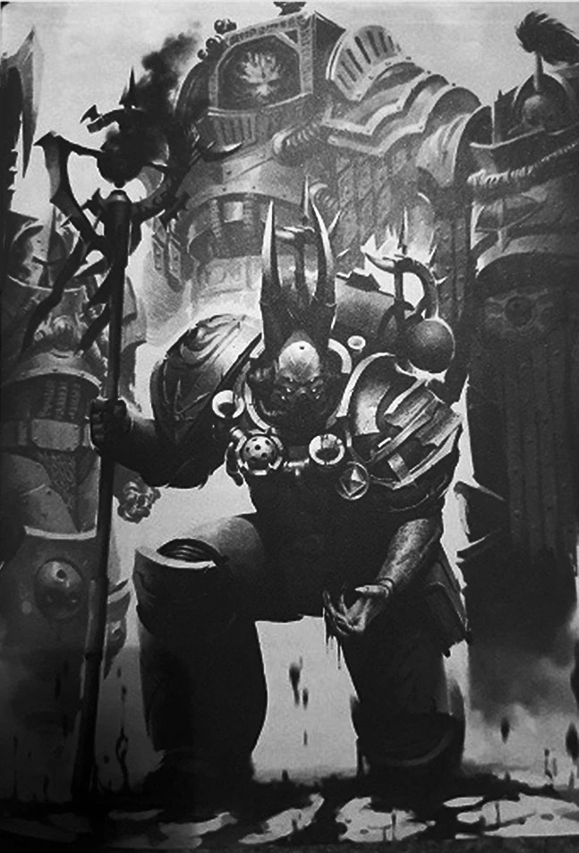

Zardu Layak
| Zardu Layak | |
|---|---|
| The Crimson Apostle | |
 The Crimson Apostle in the Warp-storms of the Heresy | |
| Dark Apostle of the Unspeaking | |
| Tenure | Before 007.M31 – 014.M31 |
| Commander of the Word Bearers in Horus's host | |
| Tenure | 013–014.M31 |
| Born | M30 (year unrecorded), an orbital plate above Terra |
| Died | 014.M31, killed by Rogal Dorn at the Lion's Gate Spaceport |
| Allegiance | Lorgar, then Horus (013.M31); Chaos |
| Legion | |
| Other titles | Thrice-Born; Binder of Souls; Voice of the Unspeaking; the left hand of Horus |
| Wargear | The staff Azurda Char'is; the Panoply of Flame; Anakatis Kul blade-slaves |
| Known for | Massacres on Calth; betraying Lorgar at Ullanor; opening Terra to daemons |
Zardu Layak, called the Crimson Apostle, was a Dark Apostle of the Word Bearers and master of their Chapter of the Unspeaking. He led massacres on Calth in 007.M31, became Lorgar's closest confidant, and in 013.M31 betrayed Lorgar's plot to kill Horus. He then served at Horus's side through the Siege of Terra and was called the Warmaster's left hand. He was killed by Rogal Dorn in 014.M31, and his death opened the way for the first daemons to walk on Terra.[1][2]
His true name is lost. "Zardu Layak", meaning "Eater of Wisdom", was taken by lot from the Book of Lorgar.[1]
Early life
[edit]Layak was born on an orbital plate above Terra, among criminal monks who worshipped relics found in the plate's oldest decks. Warriors in grey killed the monks; the boy was the only survivor, found weeping over the broken idols, and was taken into the XVII Legion. He became an officer of the Ashen Circle, the Legion's burners of temples, and in the Unification Wars and the early Great Crusade he destroyed a hundred shrines in the Emperor's name.[1]
The Word Bearers
[edit]After the Emperor's rebuke of the Legion at Monarchia c. 961.M30, Layak, ashamed, turned eagerly to Lorgar's new faith. He began to see visions in which the primarch told him not to burn forbidden books but to read them. He took his new name, chained a daemonic helm to his face, and swore that none but the gods would see it again. Erebus made him Chaplain of the Chapter of the Ochre Gate, which under him changed into the Unspeaking.[1][a]
Lorgar gave the Unspeaking a key role in the attack on Calth in 007.M31, where Layak's Ashen Circle carried out some of the worst massacres of civilians. Afterwards he took the place of Erebus and Argel Tal as Lorgar's closest companion.[3]
The plot against Horus
[edit]After the Battle of Beta-Garmon (007–013.M31) Horus called the traitor host to Ullanor. Lorgar, judging him unfit to lead, planned to kill him. With Layak and the seer Actaea he passed through the Webway into the Eye of Terror and found Fulgrim in the palace of Slaanesh. Layak spoke the true name of the new daemon primarch and bound him. At Ullanor in 013.M31 Lorgar meant to stun Horus with a psychic scream and set Fulgrim on him. Instead Layak freed Fulgrim from the binding, and Horus, already warned by Actaea, beat Lorgar and banished him. Five thousand Word Bearers of the Unspeaking followed Layak into Horus's service.[1]

The Siege of Terra
[edit]In the Solar War of 013.M31 Layak fought under Ezekyle Abaddon, saved his life aboard the White Scars battleship Lance of Heaven, and stormed the Selenar gene-labs on Luna with him. In Lupercal's Court aboard the Vengeful Spirit he was always at Horus's side, and Abaddon blamed him for the Warmaster's surrender to the gods, but was forbidden to kill him. Layak's sermons on the injustices of the Imperium were broadcast through the traitor fleet. With Magnus he worked the ritual that weakened the Emperor's psychic shield over the Palace, and spoke to Terra from an island of bone that circled the Palace in the sky. He told Abaddon that the gods were burning out Horus's soul, and hinted that Abaddon would succeed him.[2]
With Typhus he summoned the daemon Cor'bax Utterblight to corrupt Euphrati Keeler's faithful. At the Lion's Gate Spaceport in 014.M31 Abaddon went against his advice to rescue Khârn from Rogal Dorn. Layak, believing the future Warmaster must survive, turned to face the primarch himself. His sorcery held Dorn for a time; then his blade-slaves were cut down and he was mortally wounded. He told Abaddon this had always been his fate. As he died his body burst in a blast of Warp energy, leaving a crater and a rift through which the first daemons entered Terra.[2]
Legacy
[edit]On the daemon worlds of the Word Bearers Layak is honoured with statues beside Argel Tal and the Chaplain Xaphen.[1]
Timeline
[edit]| Date | Event |
|---|---|
| M30 | Born above Terra; joins the XVII Legion and the Ashen Circle |
| c. 961.M30 | The rebuke at Monarchia; turns to Lorgar's faith |
| 007.M31 | Massacres on Calth |
| 013.M31 | Binds Fulgrim; betrays Lorgar at Ullanor; the Solar War |
| 014.M31 | Killed by Rogal Dorn at the Lion's Gate Spaceport |
See also
[edit]Notes
[edit]- ^ The date of the rebuke at Monarchia is estimated from Imperial records placing it some decades before the Heresy.